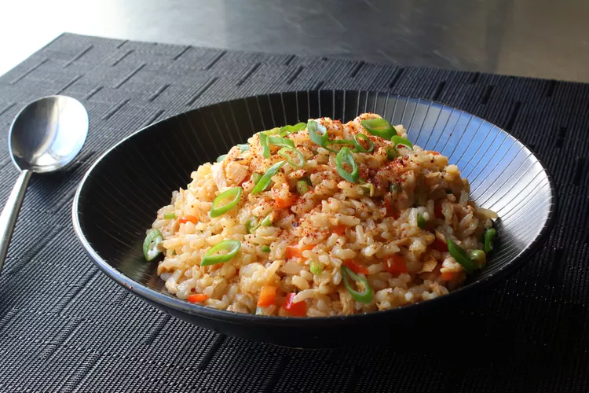

Spicy Tuna Rice Bowl

What we have here is equal
parts tuna and rice by weight,
which for me, gives this the perfect
balance between protein and starch.
While this may remind some people of a
fried rice dish, this is significantly
lighter, and actually very low on fat
content, but that doesn't mean it's not
satisfying, and like most rice dishes,
it's very comforting.
Ingredients
- 1 cup uncooked long-grain rice
- 1 1/2 cups water
- 1 (7 ounce) jar tuna packed in olive oil
- 1/2 cup finely diced red bell pepper
- 1/4 cup finely diced jalapeno pepper
- 1/4 cup finely sliced green onions
- 1/3 cup seasoned rice vinegar
- 1/2 lemon, juiced, or to taste
- 2 tablespoons soy sauce
- 2 teaspoons Sriracha hot sauce
- 1/2 teaspoon sesame oil
- 1 pinc Korean red pepper flakes (gochugaru), or to taste
- 1 teaspoon finely sliced green onion, or to taste
Directions
-
Pour rice into a heavy pot and add water;
swirl to allow rice to settle. Bring to a
simmer over medium-high heat; do not stir.
Reduce heat to low, cover, and continue to
simmer for 15 minutes.
-
While rice is cooking, place tuna into
a large mixing bowl and break up with
your hands or a fork. Toss in red bell
pepper, jalapeno, 1/4 cup green onions,
rice vinegar, lemon juice, soy sauce,
Sriracha, and sesame oil. Mix with a
fork until thoroughly combined.
-
Turn off heat and let rice sit, covered, for 10 minutes.
-
Fluff rice with a fork to separate the
grains and break up any large clumps;
transfer into the mixing bowl. Mix thoroughly
with a spoon until all the ingredients are
evenly incorporated. Taste and adjust
seasoning if needed. Serve warm, at
room temperature, or cold like a rice
salad, topped with red pepper flakes
and 1 teaspoon green onion.
Chef's Notes:
If using unseasoned rice vinegar,
adjust with a few pinches of sugar and salt.
You can use any hot sauce you like.
If you use a little less dressing,
a shorter grain of rice, and make
this a little stickier, you can
actually press this together and
form it into balls that can be rolled
in sesame seeds for an incredible handheld
snack to bring to work or a picnic.
Bon Appétit!
Back to Home